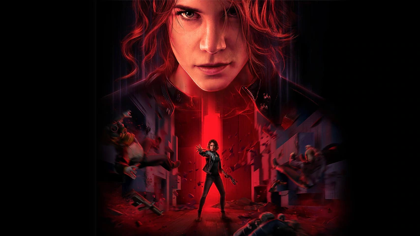
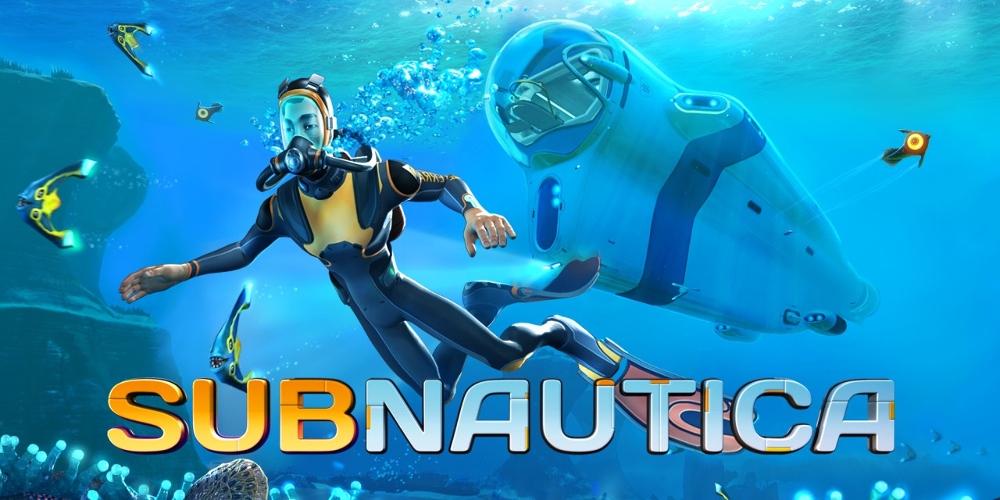
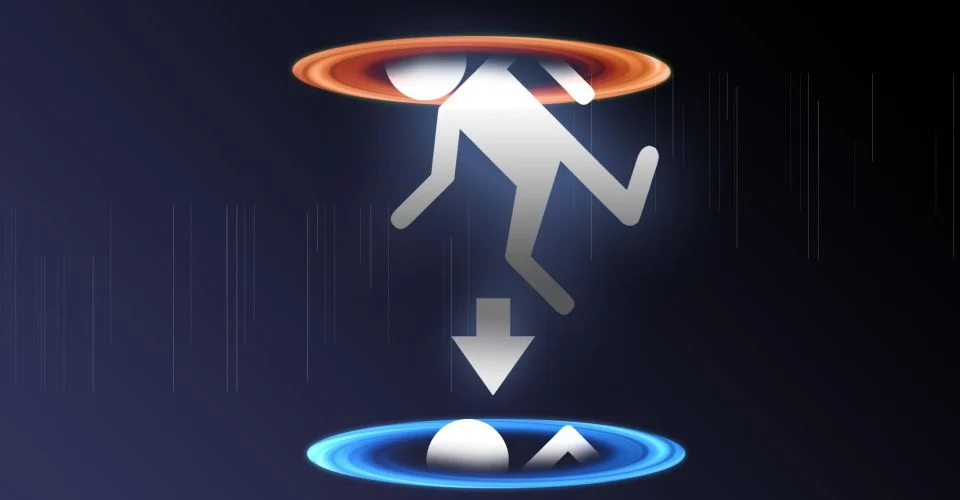
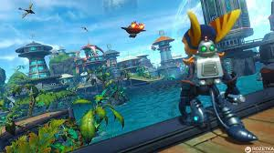
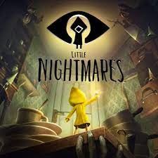

Control
sinopse: Após uma ameaça sobrenatural invadir uma agência secreta de Nova York,
você se transforma na nova diretora do local, lutando para recuperar o controle.

subnaltica
sinopse: Desça nas profundezas de um mundo subaquático alienígena cheio de maravilhas e perigos.
Equipamentos de artesanato, submarinos piloto e vida selvagem inteligente para explorar recifes de
corais exuberantes, vulcões, sistemas de cavernas e muito mais - tudo isso enquanto tentam sobreviver.

portal
Seu nome é Chell, voce é uma cobaia de testes de uma IA chamada GLaDOS
que vai mostrando sua loucura aos poucos, voce tem que sobreviver aos
perigosos testes e um bolo seria sua merecida recompensa.

ratchet & clank
sinopse: A trama exibe o primeiro encontro de Ratchet com Clank,
o robô que aterrissa acidentalmente em Veldin sendo resgatado pelo herói.
Os dois personagens formam uma dupla, tornam-se Patrulheiros Galácticos e, juntos,
partem em uma missão para salvar o universo das mãos do diabólico Chairman Drek.

little nightmares
sinopse: O jogador controla Six, uma menina vestida em uma capa de chuva amarela
que cobre grande parte do seu rosto. Durante todo o jogo, o jogador deve ajudá-la a escapar
de um barco e evitar ser capturada pelos seus tripulantes.